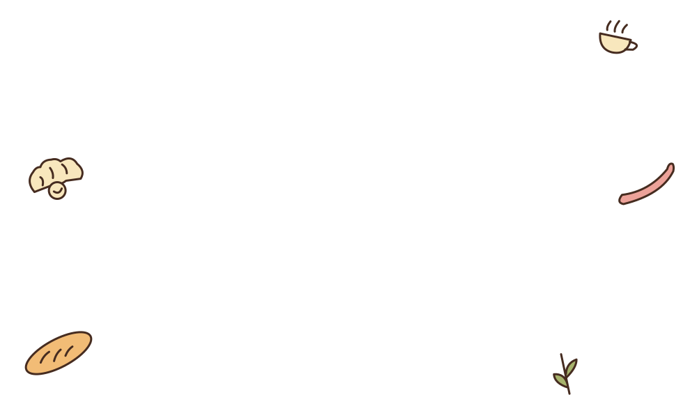
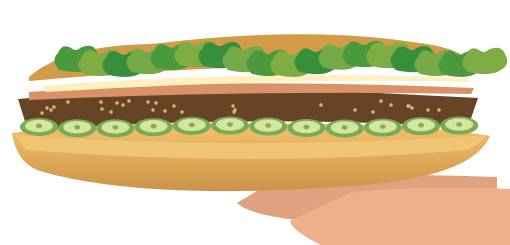

طعمهای
تازه
در
قلب محله


دربارهٔ ما
کافهای در دل محله
میزهای کوچک، صندلیهای چوبی و عطر قهوه؛ هر صبح نان تازه از فر بیرون میآید و شیرینی امروز روی پیشخوان مینشیند.
از نزدیک
ساعت کار
شنبه تا پنجشنبه
از ۷ صبح تا ۱۰ شب
جمعه و تعطیلات
از ۹ صبح تا ۸ شب
چطور به فینک برسیم؟
تهران، میدان هفتتیر؛ دو دقیقه پیاده تا میدان.
کافه فینک
میدان هفتتیر، تهران
نقشهٔ شماتیک محله؛ ورودی از پیادهروی ضلع شرقی میدان است.
میزت را رزرو کن.
Café Finkسلام، برای یک دورهمی کوچک میزی میخواهم.
 انتخاب این قالب
انتخاب این قالب